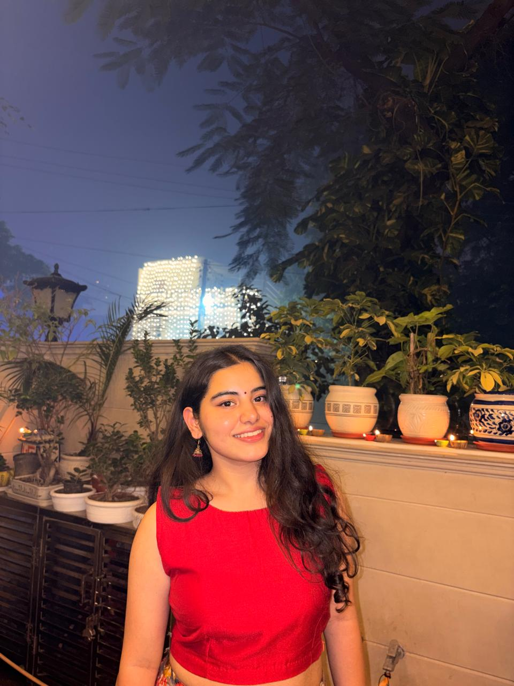

In progress
B.A. Economics (Hons.)
Building an analytical base in economics, markets and consumer behaviour.
Economics × Digital Business
An economics and digital business student interested in entrepreneurship, consumer behaviour, strategy and the ideas shaping tomorrow.

ISWhy does one brand become a habit while another stays on the shelf? That question pulled me towards economics, and then towards building things myself. I research businesses for fun, spot gaps, and sketch how an idea could become something real.
I split my time between two worlds: economics at LSR and digital business at IIM Bangalore. Outside class, I draw, bake, and shoot air pistol. Creativity and discipline turn out to be useful in business too.
Building an analytical base in economics, markets and consumer behaviour.
Learning how digital business models, technology and entrepreneurship fit together.
These are ideas and early explorations. None of them are established businesses.
Baking is one of my biggest interests. I experiment with recipes and try different desserts and baked goods.
I want to study pastry and eventually build my own bakery. For now, I'm exploring a home-based bakery: how it would run, what the product range would be, and how to turn a passion into a sustainable business.
A beauty brand concept built around cult-favourite Korean, Japanese and French pharmacy products. I made a few lip glosses and shared them with friends and family, who liked them. I am not running it actively now.
An idea I looked into to understand how online stores and print-on-demand models work. Not something I am actively doing.
An idea for a platform that recommends beauty products using their ingredient lists. Not yet built.
National-level 10m air pistol shooter, about two years in.
Recipe experiments and a growing love of pastry.
Doodling, chalk pastels and creative design.
Music and creative projects that keep me curious.